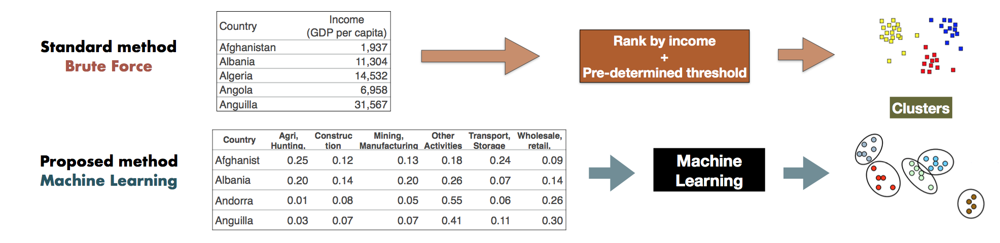

February 28, 2017

(image taken from my github, whole presentation is available here.)
For as long as I remember, international institutions like the World Bank and the IMF have grouped countries either by income or by region.
That is to say that poor countries are in a different group to the emerging, and advanced economies. Meanwhile, Asian economies are grouped in one cluster, while Europe is another. This has been the way that policymaking has been set-up, and it has never changed.
My argument is that these groupings warrant a fresh perspective. I would think it makes sense, particularly given the developments in the world today, we ought to think about whether these country groups are still relevant, or is it an outdated view of the world?
Inspired by what I learned from General Assembly's data science course, I thought I'd investigate this grouping using machine learning techniques.
The traditional way of clustering countries was to rank all countries by income and set a threshold that defines high-middle-low to build the clusters. My proposed method, using unsupervised machine learning, was to take an alternative dataset that has more information than a country's income and plug it into the "black box" of machine learning to discover the clusters. Ideally, the results of the new model would converge with the old. I provide a schematic of the methods below.
I will skip all the technicalities, but you may view all the details on the models tested and the dataset on my github. To summarize, I tried two popular clustering methods, K-Means and Hierarchical, and I ran the cluster analysis every decade during the period 1970-2015. Consistently, I was able to find three clusters in 1970, 1980, 1990, and 2000, and a slight divergence in 2010 (6 clusters for K-Means, 3 clusters for Hierarchical).
Clustering Results:
K-Means Hierarchical
1970s 3 3
1980s 3 3
1990s 3 3
2000s 3 3
2010s 6 3
I actually like this result, because it immediately suggests that three clusters are perhaps income groups (High/Middle/Low)(?) Meanwhile, the six clusters may indicate regional groups. What's good is that, it's easy to verify this hypothesis via simple Pearson correlation. I did exactly that.
Correlation of Clusters with Income
1970s: 0.699225355443
1980s: 0.6530658344
1990s: 0.628873055818
2000s: 0.544806898754
2010s: (KM) 0.016198906498
2010s: (HC) 0.367918615678
Correlation of Clusters with Region (Africa, Europe, Americas, Asia, etc.)
2010s: (KM) 0.082789964173
Correlation of Clusters with different sectors of the economy.
2010 ISICAB: (KM) 0.161243735252
2010 ISICF: (KM) 0.20600142179
2010 ISICCE: (KM) 0.255586347709
2010 ISICJP: (KM) 0.341363230757
2010 ISICI: (KM) 0.505339423178
2010 ISICGH: (KM) 0.0693089160196
To cut to the chase, the results are obvious and can be summarized into three main points.
From 70% correlation in the 1970s, there is hardly any link between clusters and income after 2010. The relationship between income and clusters have declined over time.
On the finding of 6 clusters in 2010, there seems to be no link between the clusters and regional groups.
There seems to be a link between clusters and "ISIC I," which turns out to be transportation and ICT networks.
I find this to be quite compelling and controversial. For one, we have been classifying countries using outdated groups. This can have a huge implication in the operational work of multilateral institutions today. The message of my data experiment being:
We ought to consider that income or regional groupings may not be representative of how countries cluster today.
An alternative explanation on the clusters may be found by looking more into the country, rather than income. Given developments in technology and infrastructure, the results of the experiment suggest that countries may organize themselves based on the strengths of their information and trade networks. So tell me again, why are we still classifying the world by income?